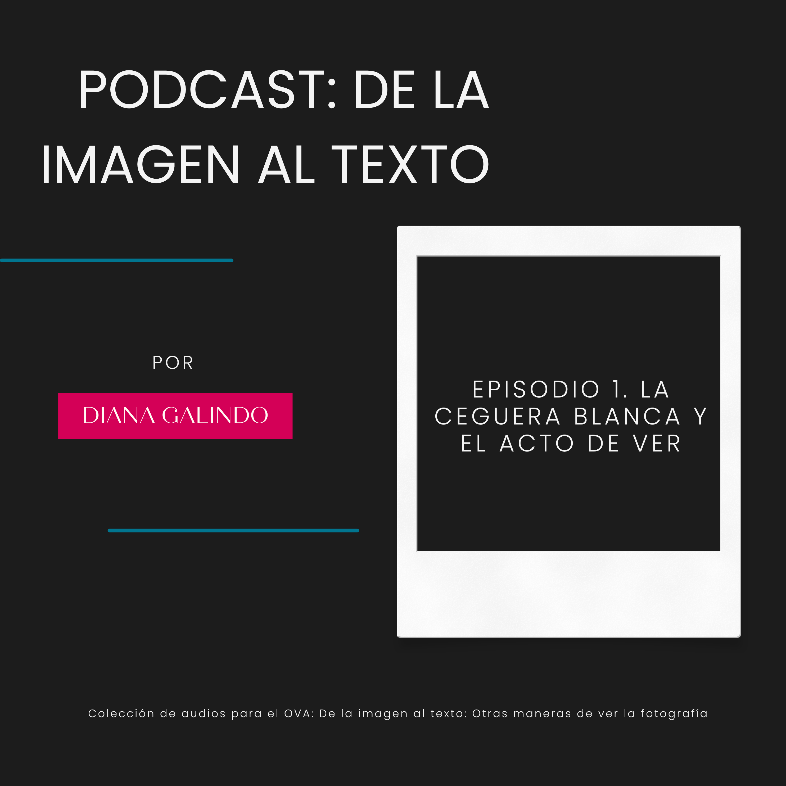

Podcast: De la imagen al texto
Aquí encontraras una pequeña colección de audios para complementar y profundizar en tu aprendizaje.
Episodio 1. La ceguera blanca y el acto de ver

Aquí encontraras una pequeña colección de audios para complementar y profundizar en tu aprendizaje.
